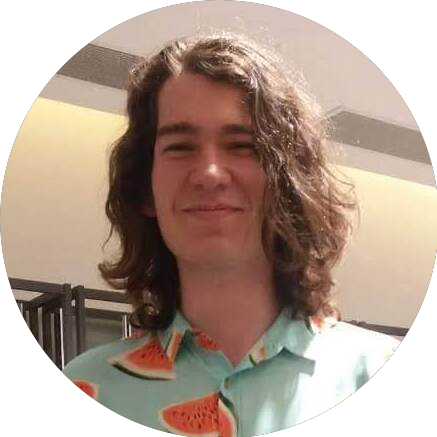

|
I am an undergraduate student in Computer Science at the Institute of Informatics at the Federal University of Rio Grande do Sul. I am a member of the Phi Robotics Research Lab as part of a scientific initiation program. I'm also part of PET Computação on UFRGS, where I study and apply data science solutions to problems on our community. |
 |
{kind=link}
|
I'm interested in mobile robotics, mainly visual SLAM and interval analysis, and data science. Currently I study image feature detectors and descriptors for visual place recognition. |
|
Some projects on which I've worked so far. |

|
GotoWhats
A simple Android app to initiate conversations on Whatsapp without the need to add a contact on the phone - which is a straightforward task, but is not available directly on Whatsapp. |

|
Color2Gray
An implementation of the color2gray algorithm introduced by Gooch et al. (2005), which aims to reduce the loss of features when color images are converted to grayscale. |
|
|

|
Receitas (in Portuguese)
A small collection of recipes that I cook or want to. |

|
Fourier Gallery
Inspired by the idea of a different art gallery, this webpage exhibits the shifted amplitude spectrum of famous artworks. |
|
html template credits |